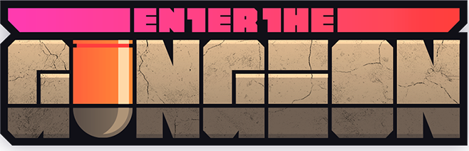

Az Enter the Gungeon egy lövöldözős dungeon crawler, aki lőni, kifosztani, kitérőt dobni és asztallapozgatni akar a személyes feloldozás felé, elérve a legendás Gungeon végső kincsét: a fegyvert, amely képes megölni a múltat. Válassz ki egy hőst, és harcolj a Gungeon aljáig úgy, hogy túlélsz egy kihívásokkal teli és fejlődő emeleti sorozatot, amely tele van a veszélyesen imádnivaló Gundeaddel és a fogig felfegyverzett félelmetes Gungeon főnökökkel. Gyűjts össze értékes zsákmányt, fedezd fel a rejtett titkokat, és csevegj opportunista kereskedőkkel és boltosokkal, hogy erős tárgyakat vásárolhass, hogy előnyhöz juthass, és megöld a múltadat.
